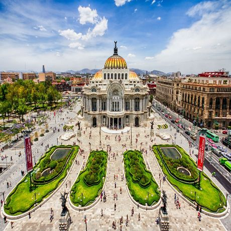

Conoce un poco mejor los lugares de los que proceden tus colegas en
línea
Todo ser humano es un artista, un ser de la libertad, llamado a
participar en la transformación y reforma de las condiciones, el
pensamiento y las estructuras que conforman e influyen en nuestras
vidas.
- Joseph Beuys
La ciudad de TripleTen ha reunido a profesionales de diferentes
rincones del mundo. Hoy, la Galería de Arte TripleTen se enorgullece
de presentar historias y fotografías de algunas de las personas que
dedican su tiempo y esfuerzo a hacer que los futuros profesionales
de la tecnología de esta ciudad se sientan como en casa. Cada uno de
nosotros tiene una historia única sobre el lugar del que procede. No
dudes en añadir a nuestra colección tu propia historia y una obra de
arte visual dedicada a tu ciudad natal. No importa de dónde seas,
nos alegra que seas nuestro vecino.
Cricieth, Gales

ARTISTAS
Steffan Warren, editor jefe
Kseniya Glagoleva, gerente de proyectos
Las ruinas medievales del castillo de Cricieth dominan la ciudad
desde una roca que extiende sobre el mar. Se cree que fue
construido por Llewelyn el Grande en el S. XIII. 800 años después,
la autodenominada Perla de Gales en las costas de Snowdonia, se ha
convertido en un popular destino turístico durante los meses de
verano.
A pocos pasos de camino al castillo, puedes disfrutar de los
mejores helados del mundo en Cadwalader's, cuyo ingrediente
secreto se rumorea que son algas marinas de la localidad. Otra
cosa por la que es famosa Cricieth es por haber ganado el premio
*Gales en flor* durante cinco años seguidos por sus espectaculares
muestras florales alrededor de la ciudad. También vio nacer a
David Lloyd George, el único galés que ha sido Primer Ministro del
Reino Unido.
Compra esta obra como NFT
Berea, EE. UU.

ARTISTA
Travis Turner, autor y editor
Berea es una pequeña ciudad ubicada en la parte central de
Kentucky. La ciudad está rodeada por hermosos bosques y campos. Es
conocida como la capital de la artesanía del estado, y sus
visitantes hallarán infinitas posibilidades para ir de compras:
tiendas de joyas, velas y artículos de madera artesanales;
galerías, talleres de vidrio y más. La ciudad celebra un festival
anual que rinde tributo al "spoonbread", un platillo local hecho
de pan de maíz y que se sirve con una cuchara de madera.
Aunque, probablemente es mejor conocida por su universidad. El
Berea College fue fundado en 1855 y fue la primera universidad
sureña integrada racialmente, así como la primera en ser
coeducacional. Algo que en cierta manera la hace única, es que no
cobra colegiatura: cada estudiante recibe una beca del 100%.
Compra esta obra como NFT
Muramvya, Burundi

ARTISTA
Grevisse Kenguruka, editor técnico
Muramvya es una de las 18 provincias de Burundi. Durante la época
del reino, Muramvya fue su capital; y en 2017, gracias a su
paisaje cultural y natural, se añadió a la Lista provisional de
patrimonio mundial de la UNESCO. Se encuentra ubicada en el centro
de Burundi, entre las capitales política y económica del país.
Su clima es más bien frío durante la noche, pero durante el día,
podrías pensar que estás en el paraíso. A sus 2,665 metros (8,743
ft) sobre el nivel del mar, el Monte Teza es uno de los lugares
más fríos de la provincia. Pero es justo esa brisa fresca la que
da pie a una de las más grandes plantaciones de té y café del
país, y que representa la mayoría de las exportaciones de Burundi.
El Parque nacional de Kibira, una de las mayores reservas de vida
silvestre para los simios, ocupa parte de cuatro provincias,
incluyendo Muramvya. Este parque nacional se encuentra en las
cúspides de las hermosas montañas de la Divisoria Congo-Nilo,
cuyas alturas oscilan entre 1,550 y 2,660 metros. Está lleno de
hermosa vegetación, y es una fuente para los diversos ríos y
arroyos que proporcionan agua alrededor del país.
Compra esta obra como NFT
México, CDMX

ARTISTA
Fernando Hernandez Barrios
La ciudad de México (CDMX) es la capital y entidad federativa más
pequeña del páis, pero también la más poblada con más de 9
millones de habitantes. Asentada en el valle de México, destaca
por su historia azteca y colonial, siendo un centro cultural con
más de 170 museos. Cuenta con sitios patrimonio de la Humanidad
como el Centro Histórico, Xochimilco y la Ciudad Universitaria
(UNAM).
Ofrece una inigualable mezcla de historia milenaria, cultura,
gastronomía de clase mundial y modernidad. Destacan el Zócalo
(Centro Histórico), el Museo Nacional de Antropología en
Chapultepec, la arquitectura colonial y los canales de Xochimilco
famosos por sus canales y paseos en embarcaderos tradicionales
llamadas trajineras.
Compra esta obra como NFT